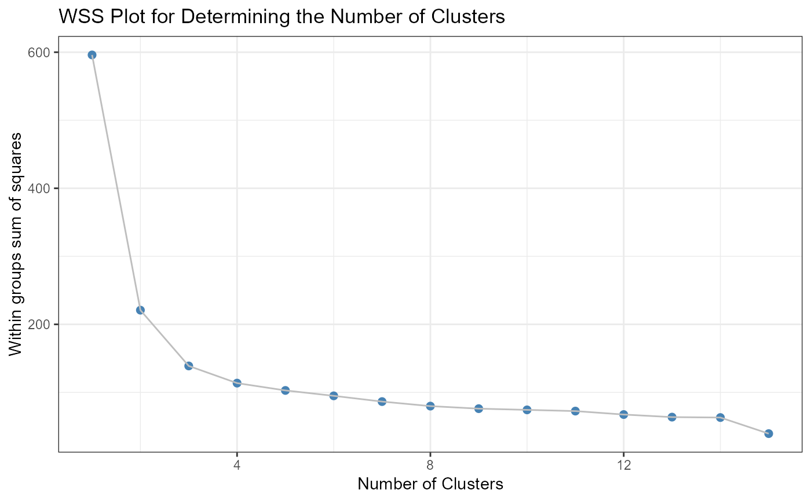

Within Groups Sum of Squares Plot
wss_plot(data, nc = 15, standardize = TRUE, seed = 1234)
| data | a data frame of numeric variables. |
|---|---|
| nc | integer. The largest number of clusters to evaluate. |
| standardize | logical. If |
| seed | integer. A random number seed for reproducablility. |
a ggplot2 graph
wss_plot generates a plot of within-groups
sums-of-squares vs. number of clusters based on
k-means clustering. The clustering uses euclidean distances
between observations. By default, the variables are standardized
(recommended). The plot is useful for determining the number of clusters
present in the data. Look for the point were adding clusters does not significantly
decrease the within-groups sum-of-squares.
